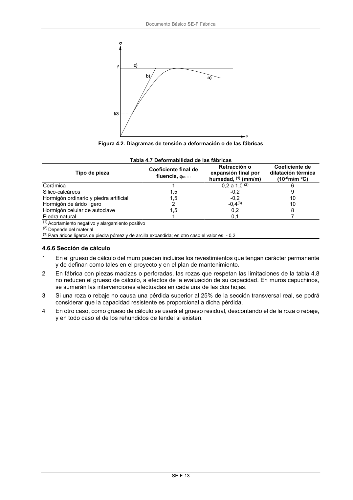

DB-SE-F · 4.6.6 Sección de cálculo · versión 2019-12-20
SHA256: e3e0805c3b4c307519c26dc34c3fdbf143d842edd013c91b0f52d2c73403d91c · página física 17 de 70 · métodos de encabezado
solo si están cotejados.
Formatos: Markdown · JSON de bloques · PDF p. 17 · imagen PNG
Documento Básico SE-F Fábrica SE-F-13 Figura 4.2. Diagramas de tensión a deformación o de las fábricas Tabla 4.7 Deformabilidad de las fábricas Tipo de pieza Coeficiente final de fluencia, Retracción o expansión final por humedad, (1) (mm/m) Coeficiente de dilatación térmica (10-6m/m ºC) Cerámica 1 0,2 a 1,0 (2) 6 Silico-calcáreos 1,5 -0,2 9 Hormigón ordinario y piedra artificial 1,5 -0,2 10 Hormigón de árido ligero 2 -0,4(3) 10 Hormigón celular de autoclave 1,5 0,2 8 Piedra natural 1 0,1 7 (1) Acortamiento negativo y alargamiento positivo (2) Depende del material (3) Para áridos ligeros de piedra pómez y de arcilla expandida; en otro caso el valor es - 0,2 4.6.6 Sección de cálculo 1 En el grueso de cálculo del muro pueden incluirse los revestimientos que tengan carácter permanente y de definan como tales en el proyecto y en el plan de mantenimiento. 2 En fábrica con piezas macizas o perforadas, las rozas que respetan las limitaciones de la tabla 4.8 no reducen el grueso de cálculo, a efectos de la evaluación de su capacidad. En muros capuchinos, se sumarán las intervenciones efectuadas en cada una de las dos hojas. 3 Si una roza o rebaje no causa una pérdida superior al 25% de la sección transversal real, se podrá considerar que la capacidad resistente es proporcional a dicha pérdida. 4 En otro caso, como grueso de cálculo se usará el grueso residual, descontando el de la roza o rebaje, y en todo caso el de los rehundidos de tendel si existen.
